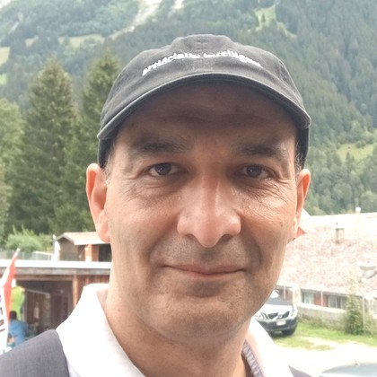

University of Western Australia
Ghulam Mubashar Hassan
Senior Lecturer in the Department of Computer Science & Software Engineering at the University of Western Australia. UWA Valedictorian (2016) · Fellow of the Higher Education Academy UK.
Artificial Intelligence
Machine Learning
Optimization
Digital Image Processing
Computer Vision
Engineering Education

Awards & Recognition
UWA Early Career Research Award Commendations 2025
Early Career Research Award — Physics, Mathematics & Computing 2025
AAEE Award for Engineering Education Research Design 2023
Early Career Research Award Commendations — Physics, Mathematics & Computing 2023
Fellowship of the Higher Education Academy UK 2022
UWA EMS Best Teaching Award 2018/2019
UWA GUILD Student Choice Award — Semester 1 2019
UWA GUILD Student Choice Award — Semester 2 2018
UWA EMS Best Teaching Award Commendations 2017/2018
Australian Postgraduate Award · Bruce & Betty Award · Merit Top-Up Award
AAEE Early Career Academy Membership 2018–2021
SUN Microsystems Certified Programmer for Java
Professional Memberships
- Australian Centre for Quantitative Imaging (ACQI)
- IEEE
- Australian Association of Engineering Educators (AAEE)
- Higher Education Academy UK
- Engineers Australia (EA)
- Pakistan Engineering Council (PEC)
Education
-
ValedictorianDoctor of Philosophy (PhD)Joint Schools of Computer Science & Software Engineering, and Civil & Resource EngineeringUniversity of Western Australia · Perth, Australia
- CGPA 4.0/4.0
-
A+ with HonoursBachelor of ScienceElectrical & Electronics EngineeringUniversity of Engineering & Technology · Peshawar, Pakistan
Research Grants
AUD $2,448,923
Total funding awarded
"WA Human Milk Research Biorepository"
Geddes, Palmer, Nicol, Sharp, Ghulam Mubashar Hassan, Perrella, Stinson · Stan Perron Charitable Foundation
$1,305,695
2025–2029
"Clinical Evaluation of Deep Learning for Identification and Prognosis in Metastatic Prostate Cancer"
Kendrick, Ebert, Ghulam Mubashar Hassan et al. · Department of Health (WA)
$361,146
2025–2026
"Accelerating Clinical Translation: Radiomics Models in Glioblastoma"
Barry, Bynevelt, Kendrick, Ebert, Ghulam Mubashar Hassan et al. · Royal Perth Hospital
$80,000
2025–2026
"Smart Roadside Barriers with Enhanced Sustainability and Impact Resistance"
Elchalakani, Ghulam Mubashar Hassan, Wittak, Braunl · Road Safety Innovation Fund, Dept. of Infrastructure
$300,500
2021–2023
"Drone Video Analytics for Short-Term Traffic Prediction"
Sun, Reynolds, Huynh, Ghulam Mubashar Hassan, Biermann · WA Main Roads
$124,500
2019–2020
"Digitization of Centrifugal Slurry Pumps"
Karrech, Ghulam Mubashar Hassan, Elchalakani · Metso Sweden
$66,500
2021–2024
"Investigation of Integrating Generative AI into Engineering Education"
Neal, Belkina, Grundy, Ghulam Mubashar Hassan et al. · Australasian Association for Engineering Education
$20,000
2024
"Matariki Funding Application (Deepfakes)"
Ghulam Mubashar Hassan, Reed, Farhad, Hardey et al. · The Matariki Network of Universities
$8,314
2025–2026
"AI Adoption in WA Volunteering Sector"
Das, Roy, Ghulam Mubashar Hassan, Reed, Loyola · Volunteer Centre of WA
$20,000
2025–2026
"Conversion between Brain Cancer Imaging Modalities using Generative AI"
Ebert, Barry, Rusanov, Kendrick, Hassan · Dept. of Health Innovation Challenge
$38,805
2023–2024
"Radiomics for Survival Prediction in Prostate Cancer"
Kendrick, Hassan · UWA Data Institute Summer Research
$8,000
2023–2024
"More Accurate Neurosurgical Navigation Through Brain Deformation Computation"
Wittek, Ghulam Mubashar Hassan, Pasternak, Dyskin, Miller, Warfield · UWA Research Income Growth Grant
$20,000
2018–2019
"Developing Technological Leaders" & Other UWA Grants
Various UWA Community of Practice, Education Futures, IM4DC, Graduate Research School grants
~$71,850
2014–2019
Publications
Book Chapters
Ghulam Mubashar Hassan, "Computational Thinking", CA ANZ Risk and Technology, Wrightbooks – John Wiley & Sons Australia Ltd, pp. 207–230, ISBN: 9780730391272, 2021.
Datasets
J. Jorgensen, M. Hodkiewicz, E. Cripps and Ghulam Mubashar Hassan, "OpenBoltRF: An open-source workflow to analyse load transfer for geometrically imperfect bolted ring-flanges in offshore wind turbines," 2024. doi: 10.5281/ZENODO.8287222
Z. M. Malakan, S. Anwar, Hassan and A. Mian, "Sequential storytelling image dataset (SSID)," 2023. doi: 10.21227/dbr9-dq51
Journal Papers (selected recent)
D. Ali, A. Mian, N. Akhtar and Ghulam Mubashar Hassan, "DRBD-Mamba for robust and efficient brain tumor segmentation," Brain Informatics, 2026. doi: 10.1186/s40708-026-00326-w
Juwita, Hassan and A. Datta, "3D-SCUMamba: An Abdominal Tumor Segmentation model," IEEE Access, 2025. doi: 10.1109/ACCESS.2025.3573619
M. Belkina, S. Daniel, S. Nikolic, R. Haque, S. Lyden, P. Neal, S. Grundy and Ghulam Mubashar Hassan, "Implementing generative AI (GenAI) in higher education: A systematic review," Computers and Education: AI, 2025. doi: 10.1016/j.caeai.2025.100407
S. Nikolic, C. Sandison, R. Haque, S. Daniel, S. Grundy, M. Belkina, S. Lyden, Hassan and P. Neal, "ChatGPT, Copilot, Gemini, SciSpace and Wolfram versus higher education assessments," Australasian Journal of Engineering Education, Vol. 28, 2024. doi: 10.1080/22054952.2024.2372154 (Most-read & 3rd most-cited article of the journal; Best Article of Year 2023)
S. Nikolic, S. Daniel, R. Haque, M. Belkina, Ghulam Mubashar Hassan, S. Grundy, S. Lyden, P. Neal and C. Sandison, "ChatGPT versus engineering education assessment," European Journal of Engineering Education, Vol. 48, 2023. (2nd most-read & most-cited; Best Article 2023)
B. Rusanov, Ghulam Mubashar Hassan, M. Reynolds, M. Sabet, P. Rowshanfarzad, N. Bucknell, S. Gill, J. Dass and M. Ebert, "Transformer CycleGAN with uncertainty estimation for CBCT based synthetic CT in adaptive radiotherapy," Physics in Medicine and Biology, Vol. 69(3), 2024.
Y. Zhang, M. Reynolds, A. Lugmayr, K. Damjanov, Ghulam Mubashar Hassan, "A Visual Data Storytelling Framework," Journal of Informatics, Vol. 9(73), 2022. [Editor's Choice]
Ghulam Mubashar Hassan, "Deformation measurement in the presence of discontinuities with digital image correlation: A review," Optics and Lasers in Engineering, Vol. 137, 2021.
Conference Papers (selected)
K. Nguyen, Hassan and A. Mian, "Occlusion-aware Text-Image-Point Cloud Pretraining for Open-World 3D Object Recognition," CVPR 2025. Link
D. Ali, A. Mian, N. Akhtar and Ghulam Mubashar Hassan, "Attention-Guided VQVAE for Brain Tumor Segmentation," MICCAI 2025. Link
J. Vo, N. Sharif and Ghulam Mubashar Hassan, "MNA-net: Multimodal Neuroimaging Attention for Cognitive Decline Prediction," MICCAI 2024 Workshop. [Best Paper Award]
S. Grundy, M. Belkina et al. and Ghulam Mubashar Hassan, "Practical Strategies for Integrating GenAI in the Classroom," AAEE 2025. [Best Practice Paper Award]
Hassan and M. Reynolds, "Genetic algorithms for scheduling and optimization of ore train network," GCAI 2018, EPiC Series in Computing, Vol. 55, pp. 81–92.
View complete publications list
Teaching
Unit Coordinator / Lecturer
University of Western Australia
- Computer Analysis & Visualization
- Problem Solving & Programming
- Computational Thinking with Python
- Software Requirements and Design
- Software Engineering Design Project
Unit Coordinator / Lecturer
University of Engineering & Technology, Peshawar
- Control Systems
- Microprocessor Based System Design
- Database Management Systems
- Advanced Project Planning and Management
- Data Structures
- Microprocessor Design
- Object Oriented Programming
- Programming with Java
Head Tutor
University of Western Australia
- Computer Analysis & Visualization
Teaching Assistant / Tutor
University of Western Australia
- Object Oriented Programming and Software Engineering
- Computer Analysis & Visualization
- Problem Solving and Programming
Teaching Assistant
Oklahoma State University
- Experimental Method-II
Research Team
Current PhD Students
Branimir Rusanov
Alan Varghese
Lucie Ketelsen
Azani Hasibuan
Pasa Ciceklidag
Shahin Hakemi
Khanh Nguyen
Danish Ali
Suning (Juliet) Li
Viska Mutiawani
Brendan Wright
Kaylee Molin
Rizal Alfaridzi
PhD Alumni
Dr. Juwita — Automatic small abdominal organ and tumor (SAOT) segmentation from CT scans
Dr. Asmaa Abdullah Shati — AI-based approaches for respiratory disease detection using audio signals and imaging data
Dr. Jack Jorgensen — Fatigue analysis under uncertainty of bolted ring-flanges in offshore wind turbine support structures using surrogate models
Dr. Nathaniel Barry — Augmenting the clinical approach to glioblastoma: automatic segmentation and radiomics
Dr. Xin Lyu — Investigation of high strength rubberised concrete for roadside barriers
Dr. Afsah Saleem — Machine Learning for Computer-Aided Diagnostics from Complex Medical Images
Dr. Abdullah Alelyani — Cloud Computing Efficiency: Optimizing Resource Utilization using Intelligent Algorithms
Dr. Rini Anggrainingsih — Rumour Detection and Classification on Microblogging Platforms
Dr. Sania Zahan — Human Motion Analysis
Dr. Haifa Almutairi — Automated Classification of Sleep Stages and Detection of Sleep Disorders
Dr. Jake Kendrick — Towards a Quantitative Management of Metastatic Prostate Cancer using PSMA PET images
Dr. Zainy M. Malakan Aljawy — Automatic Generation of a Coherent Story from a Set of Images
Dr. Hezam Albaqami — Leveraging Machine Learning for Enhanced Detection and Classification of Brain Pathologies Using EEG
Dr. Yangjinbo Zhang — Development of a Visual Data Storytelling Framework
Supervised Students
2024
Honours
Jonathan Lim · Jordon Lu · Stephan Nio · Ri Nandiya
Masters
Fatema Khalil · Bronsen Lvulich · Keylene Chong · Seharsh Srivastava · Shu-Chi Liu
2023
Honours
Jamie Vo · Lachlan Bassi
Masters
YiMing Liu · Yitong Yang · Boyu Cai · Matthew Walsh · Aditya Rao
2021
Masters
Karolina Kucharska · William Feng · Matthew Rose · Edgar Poh · Mohammad Zaman Khan · Rao Tan · Zachary Browne · Andie Gell · Andie Sones · Geoff Buitendag · Haowei Xu · Justin Bardwell · Hamish Blanchard · Akhil Naseem · Mitchell Button · Yiheng Lyu · Henry Liu · Xiangxin Zend
2020
Masters
Eddie Simpson · Rajvir Kaur · Jessica Jia Yong Khoo · Himanshi Satnani · Jewel Payne · Junhong Guo · Jeremiah Leo · Naradipa Adenan · Jason Jung · Mustafa Shahid · Huiyuan Liu Gao · Vigneshvar Thiruvengadam · Dylan Bell · Jake Kendrick · Paulus Angkodjojo
2019
Masters
Rhys Collier · Jack Duncan · Nithin Parakash · Wesley Seet · James Luu · Kyle Rory Ludewick · Marcus Altmann · Daniel Nuyen · Chiyu Weng · Dawn Than · Bhagyashri · Kevin Yuan Leong · Gavy Dia · Anthony Joseph · Brendon Wright · Frank Ta
2018
Masters
Jonathan Skotny · Vincent Chong · Liam Cummins · Alexander Emery · Michael Finn · Rhys Kessey · Zen Ly
2017
Masters
Aaron Hurst · Ray Barker · Joel Frewin · Theodore Wilson
2015
Masters
Nirusha Phillips · Hayden Crisp · David Hang · Ashley Day
2014
Masters
Van Nghia Dinh · Gang Li
2011
Honours
Aurang Zeb · Fawad Ali Khan
2006–2010
Earlier cohorts (UET Peshawar & OSU)
Fahim Ullah · Mian Sanaullah · Saadia Wazir · Qamar Ul Ain · Amad Ibrahim Marwat · Salman Wahid · Fazal Kareem · Saeed Anwar · Wasim Iqbal · Asad Ullah · Shahid Khan · Rabia Javed · Beena · Umbreen Gul · Shah Mahmood · Anwar Kamal Afridi · Fazal Rabi · Shaukat Hayat · Sajid Hameed
Contact
Email
Phone
(+61) 6448-7228
Department